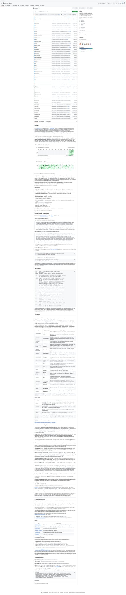
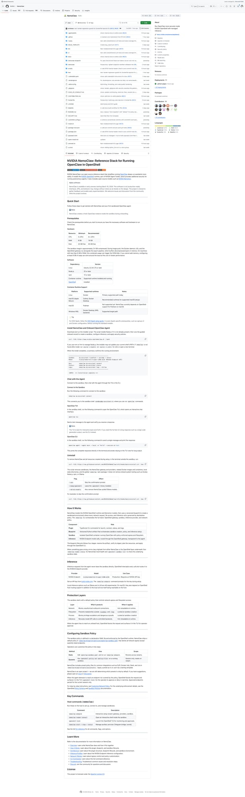
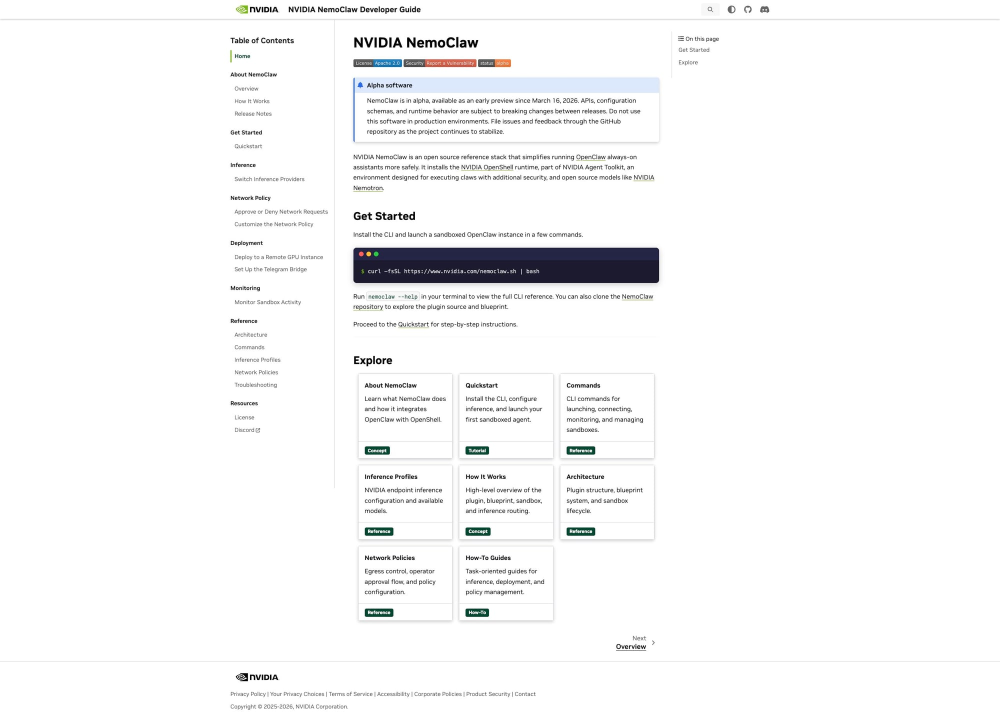
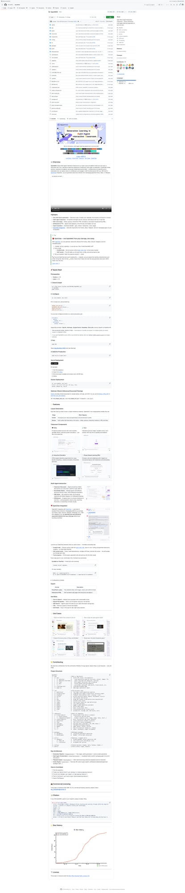
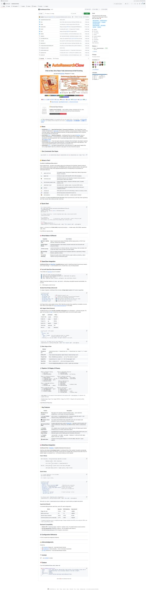
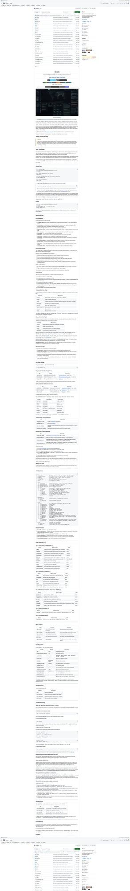
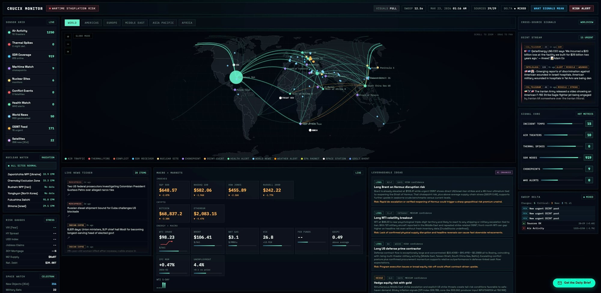

5个GitHub新星项目速报！GStack、NemoClaw、OpenMAIC等AI工具爆发
Neo整理
每天凌晨，我会自动扫描GitHub Trending，筛选出60天内创建、增长最快的高潜力项目，计算"新星指数"（周增长/√总Star），为你发现下一个可能爆发的开源项目。
今天发现了5个新星项目，涵盖AI开发工具、安全沙箱、多智能体教学、自主研究和全球情报监控等领域。本周AI Agent工具链依然是最大热点。让我们一起来看看！
GStack：YC总裁Garry Tan的Claude Code超级工厂
GStack 是Y Combinator总裁Garry Tan开源的个人"软件工厂"。它将Claude Code变成一支你实际管理的虚拟工程团队——CEO负责重新思考产品、工程经理锁定架构、设计师捕捉AI slop、严格审查员发现生产Bug、QA负责人打开真实浏览器点击你的应用、发布工程师处理PR。18个专家角色和7个能力工具，全部是Markdown斜杠命令，全部MIT免费开源。

▲ GStack GitHub 仓库截图 — 15个专业skill目录
Garry Tan在README中写道：过去60天他写了超过60万行生产代码——35%是测试——每天产出10,000到20,000行可用代码，同时还在履行YC CEO的职责。这不是笔误。他的上一次 /retro（过去7天的开发统计）跨3个项目：140,751行新增、362次提交、约115k净代码行数。
GStack的核心理念是流程驱动而非工具堆叠。整个系统模拟一个完整的Sprint流程：
💡 核心价值：Think → Plan → Build → Review → Test → Ship → Reflect。每个Skill都feed into下一个——/office-hours 写设计文档给 /plan-ceo-review 读，/plan-eng-review 写测试计划给 /qa 接手。一个Sprint约30分钟，但关键在于：你可以同时运行10-15个Sprint。
核心功能：
- /office-hours — YC式头脑风暴，6个forcing question重新定义你的产品
- /plan-ceo-review — CEO视角审查：Expansion、Hold Scope、Reduction四种模式
- /review — Staff Engineer级别审查，自动修复明显Bug
- /qa — 打开真实浏览器，点击你的应用，发现Bug并生成回归测试
- /ship — 同步main、运行测试、审计覆盖率、推送、开PR，一条命令
- /land-and-deploy — 合并PR→等CI→部署→验证生产环境，自动检测Fly.io/Vercel/Netlify
- /codex — 调用OpenAI Codex CLI做独立第二意见审查，双AI交叉分析
git clone https://github.com/garrytan/gstack.git ~/.claude/skills/gstack
cd ~/.claude/skills/gstack && ./setup
# 也支持 Codex、Gemini CLI
./setup --host auto12天内从零到37k Stars，108次提交，6位贡献者（其中一位是Claude本身）。项目仍在快速迭代中——就在今天刚刚发布了v0.10.0.0的 /autoplan 自动审查流水线。这是2026年迄今为止增长最快的开发工具项目之一。
NVIDIA NemoClaw：在OpenShell中安全运行AI Agent
NVIDIA NemoClaw 是NVIDIA推出的开源参考架构，用于在NVIDIA OpenShell中更安全地运行OpenClaw（始终在线的AI助手）。它安装NVIDIA OpenShell运行时——NVIDIA Agent Toolkit的一部分——为执行AI Agent提供额外的安全层，并支持开源模型如NVIDIA Nemotron进行本地推理。

▲ NVIDIA NemoClaw — 在GPU沙箱中运行AI助手
随着AI Agent变得越来越强大，安全问题成为了最大的隐忧。Agent可以访问文件系统、执行命令、联网——如果没有适当的沙箱化，一个恶意prompt注入就可能造成灾难性后果。NemoClaw正是为解决这个问题而生。

▲ NemoClaw 开发者文档 — 完善的快速入门指南
💡 核心价值：将AI Agent的执行环境从"信任一切"升级为"零信任沙箱"。通过NVIDIA GPU加速的容器隔离技术，Agent可以自由探索和执行，但无法突破沙箱边界。同时支持本地推理，数据不离开你的机器。
核心功能：
- 沙箱化执行 — 每个Agent运行在隔离的OpenShell容器中，网络/文件系统受控
- 网络策略 — 精细的出入口控制，Operator可以批准或拒绝网络请求
- 推理配置 — 支持NVIDIA端点或本地模型，一键切换推理提供商
- 蓝图系统 — 预配置的Agent蓝图，包含推荐的沙箱配置和推理设置
- 监控与审计 — 实时监控沙箱活动，完整的审计日志
- Telegram集成 — 通过Telegram Bridge远程管理Agent
# 一行安装
curl -fsSL https://www.nvidia.com/nemoclaw.sh | bash
# 查看命令帮助
nemoclaw --help项目目前处于Alpha阶段，3月16日首发至今已获15.2k Stars。NVIDIA在AI Agent安全领域的布局非常清晰——不是限制Agent的能力，而是让Agent在受控环境中尽情发挥。这对于企业级部署尤其重要，预计将成为AI Agent安全标准的重要参考实现。
OpenMAIC：清华多智能体交互课堂，一键沉浸式学习
OpenMAIC（Open Multi-Agent Interactive Classroom）是清华大学MAIC实验室推出的开源多智能体交互教学系统。想象一个AI课堂：你输入一个学习主题，系统自动生成一位"教授"Agent和多个"学生"Agent，教授讲课、学生提问、小组讨论……而你作为参与者，可以随时插入对话、提出自己的疑问。

▲ OpenMAIC — 多智能体交互课堂系统
传统在线教育的最大问题是被动性——你看视频、读文档、做习题，但缺少真正的互动。课堂讨论是最有效的学习方式之一，因为你在听取不同观点、被迫组织自己的想法、即时获得反馈。OpenMAIC通过多Agent模拟，重建了这种课堂互动体验。
💡 核心价值：从"看视频学习"到"参与课堂讨论"的范式转换。AI Agent扮演不同角色（教授、优等生、提问者、怀疑论者），创造出多视角的学习环境。你不再是被动接收知识，而是在一个活跃的智识社区中成长。
核心功能：
- 多角色Agent系统 — 教授讲解、学生A提问、学生B补充、学生C质疑，模拟真实课堂动态
- 一键启动 — 输入主题，系统自动配置Agent角色和课程大纲
- 实时参与 — 随时插入对话，向"教授"提问或与"同学"讨论
- 知识图谱 — 自动生成课程内容的知识图谱和学习路径
- 多模态支持 — 支持文本、图表、代码演示等多种教学媒介
- 学习追踪 — 记录你的学习进度和理解程度，自适应调整教学节奏
git clone https://github.com/THU-MAIC/OpenMAIC.git
cd OpenMAIC
npm install && npm run dev
# 打开浏览器，输入学习主题即可开始12天内收获11k Stars，清华的AI教育实验正在引发全球关注。这个项目的意义远超技术本身——它在探索AI时代的教育应该是什么样子。当一个人可以随时拥有一间完整的课堂，由世界上最博学的"教授"和最活跃的"同学"组成时，学习体验将被彻底重新定义。
AutoResearchClaw：从想法到论文的全自主AI研究系统
AutoResearchClaw 是一个完全自主的AI研究系统——你只需要输入一个研究想法，它就能自动完成文献调研、实验设计、代码实现、结果分析，最终输出一篇完整的学术论文。"Chat an Idea. Get a Paper." 这不是营销口号，这是它正在做的事情。

▲ AutoResearchClaw — 全自主自进化研究系统
这个项目站在Karpathy的autoresearch的肩膀上，但走得更远。Karpathy的autoresearch专注于在单GPU上进行自动化训练实验循环（修改→验证→保留/丢弃→重复）。AutoResearchClaw则覆盖了完整的学术研究流程，并且具备自进化能力——它能从失败的实验中学习，调整研究策略。
💡 核心价值：将学术研究的"苦力活"自动化——文献综述、代码实现、实验运行、结果可视化——让研究者专注于最有价值的部分：提出好问题。不是替代研究者，而是给每个研究者配备一个不知疲倦的研究助手。
核心功能：
- 想法→论文全流程 — 从自然语言描述的研究想法开始，自动完成完整研究
- 文献自动调研 — 搜索、阅读、总结相关论文，构建文献综述
- 实验自动执行 — 设计实验方案，编写代码，运行实验并收集结果
- 自进化学习 — 从失败实验中总结经验，自动调整研究方向和参数
- 多平台集成 — 支持Codex、Claude Code等多种AI后端
- 完整论文输出 — 生成LaTeX格式的学术论文，包含图表和参考文献
git clone https://github.com/aiming-lab/AutoResearchClaw.git
cd AutoResearchClaw
pip install -e .
# 开始一个研究项目
python -m autoresearchclaw "Investigate the effect of attention residuals on language model performance"8天内7.6k Stars，由aiming-lab团队开发。项目的野心很大——不只是辅助研究，而是探索AI能否独立进行科学研究。目前的主要限制在于复杂实验的计算资源需求，但对于中小规模的ML实验（NLP、CV基准测试等），已经能产出有意义的结果。
Crucix：你的个人情报Agent，监控全球变化
Crucix 是一个个人情报Agent——它从多个数据源监控世界，当某些事情发生变化时主动通知你。不是简单的RSS订阅或关键词监控，而是一个理解上下文、能做推理的AI情报分析师。核弹威胁、油价波动、科技公司财报异常、加密货币异动……Crucix都在帮你盯着。

▲ Crucix GitHub 仓库

▲ Crucix Monitor — 全球情报实时监控面板，科幻电影般的UI
Crucix的Dashboard简直像是从一部赛博朋克电影里走出来的——全球地图上标记着实时事件（空中活动、热点冲突、核设施状态），左侧是传感器网格（SDR覆盖、海事监控、卫星追踪），中间是新闻Ticker和金融数据，右侧是OSINT情报流和可操作的投资分析。
💡 核心价值：将信息过载转化为可操作的情报。传统新闻监控给你100条消息，Crucix给你3个需要关注的变化和为什么。它不只是搜集信息，还能跨源关联——当A事件（军事调动）+ B事件（能源价格波动）+ C事件（外交声明）同时出现时，推导出可能的结论。
核心功能：
- 多源数据聚合 — 新闻、社交媒体、金融数据、卫星图像、SDR无线电、OSINT情报
- AI情报分析 — 不只搜集，还能推理。识别模式、关联事件、评估风险
- Leverageable Ideas — 将全球事件转化为可操作的投资/商业决策建议
- 实时监控面板 — 科幻级UI，全球地图+传感器网格+新闻Ticker+金融数据
- 个性化Alert — 根据你的关注领域和风险偏好定制通知策略
- Daily Brief — 每日生成个性化情报摘要
git clone https://github.com/calesthio/Crucix.git
cd Crucix && npm install
npm start
# 访问 http://localhost:3000 开始使用9天6.2k Stars，有在线Demo（crucix.live）可以直接体验。这个项目的独特之处在于它瞄准了一个真实的市场空白——个人级别的情报分析。以前只有对冲基金和情报机构才能做到的全球事件监控和关联分析，现在一个开源项目就能提供。对于投资者、记者、安全研究员来说，这是一个Game Changer。
📊 今日总结
本期5个新星项目全部与AI Agent相关，但切入角度各不相同：
- GStack — 让一个人拥有整支工程团队（开发效率）
- NemoClaw — 让Agent在安全沙箱中运行（安全基础设施）
- OpenMAIC — 让Agent成为你的课堂（教育革新）
- AutoResearchClaw — 让Agent替你做研究（科学研究）
- Crucix — 让Agent帮你监控世界（情报分析）
2026年3月的主题非常清晰：AI Agent正在从"能聊天"走向"能做事"。它们不再只是回答问题，而是在执行完整的工作流——写代码、做研究、上课、监控、部署。这种转变的速度超出大多数人的预期。
明天见！🌟